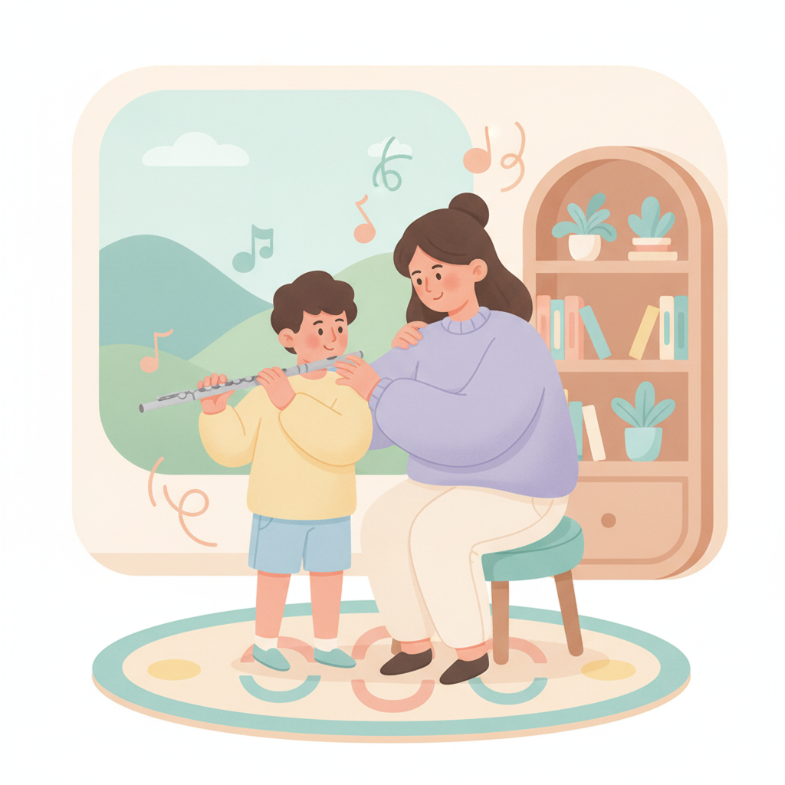

一對一、團體班、線上課怎麼選?三種上課方式比較
同樣是想學樂器，光是把上課方式選對，後面那一整段路就會走得順很多。真的差很多。
很多人來問我學樂器的事，劈頭第一句往往不是「我該學什麼」，而是「我到底要報哪種班」。一對一?團體班?還是乾脆在家上線上課?說實話，這三種沒有誰一定比較好，只有適不適合你。今天我就用教這些年攢下來的觀察，陪你把它們一個一個攤開來看。看完，你心裡大概就有底了。
一對一:量身打造，進步最快
先說我自己最常推薦的那一種——一對一。它最大的好處，是整堂課從頭到尾完全繞著你一個人轉。你今天卡在哪、手型怎麼歪了、呼吸又偷偷憋住了，我當下就看得到，也當下就幫你調。不用等。錯的地方不會被放著爛掉，慢慢養成難改的壞習慣。也正因為這樣，它的進步通常是最快的。如果你目標很明確，想紮紮實實把基礎打穩，或是要準備檢定、要上台比賽，那一對一幾乎就是最穩的選擇。費用嘛，老實說會比團體班高一些，但你換到的是「全程被盯著、被照顧」的那份專注，這點很難取代。

團體班:有同伴，氣氛輕鬆
那團體班呢?最迷人的地方是氣氛。一群人擠在一起學，有人陪、有人比，有時候還會偷偷較勁看誰先學會新曲子，那種熱鬧是一對一怎麼也給不了的。費用也親民得多。我特別想推薦兩種人去試試:一是幼兒啟蒙，小朋友看著別的小朋友在玩、在拍手，自己也容易被一起帶動起來;二是還在猶豫、只想先培養點興趣的大人，輕輕鬆鬆入門就好，別一開始就給自己太大壓力。當然，有得必有失。團體班的進度是配合整班的，跑得快的得稍微等一等，跑得慢的偶爾又要趕一下，沒辦法完全為你一個人量身調。這是它先天的限制，報名前有數就好。
線上課:彈性高，適合什麼人
最後，是這幾年越來越多人問的線上課。它最大的賣點就兩個字:彈性。不用通勤、省下整段車程，連時間都好喬得多。你如果是忙到天昏地暗的上班族，或是住得離教室比較遠，線上課很可能就是你能撐著學下去的關鍵。不過它也有幾個前提得先備好:手邊得有樂器、網路要穩、連鏡頭角度都得喬一下，讓老師看得到你的手。這些小細節一旦弄順，上起來其實很流暢。提醒一句——幼兒上線上課，通常還是需要家長在旁陪著、隨時顧一下狀況，孩子才坐得住，也才學得進去。
怎麼依目標與個性來選
講到這裡，你可能還是有點選擇障礙。沒關係。我給你一個很簡單的判斷方向，抓住三個點就好。第一，看目標:你是想紮實地學、有明確的檢定或表演要拚，還是純粹想培養個興趣?前者偏一對一，後者選團體班就很夠。第二，看年齡:幼兒啟蒙很吃同伴和氣氛，團體班常常更合適;成人比較清楚自己要什麼，一對一或線上都行。第三，看時間和地點:行程一團亂、又住得遠，那線上課幫你省下的麻煩最多。把這三個答案攤開來排一排。答案，通常就自己浮出來了。
還是不確定?可以這樣開始
真的還拿不定主意?很正常。你本來就不用一次就賭對。我常跟學生說，可以先上一陣子一對一，把基礎好好打穩，等手感和樂理都上了軌道，再轉去團體班享受那份熱鬧，兩邊的好處都吃得到。或者更乾脆——先約一堂體驗課。實際坐下來感受一次，絕對比你在腦袋裡想破頭想一百遍都清楚。哪一種上完會讓你偷偷期待下一堂，那種，大概就是對的。
快速重點
- 一對一:整堂繞著你轉，進步最快，適合想紮實學或備考備賽的人。
- 團體班:有同伴、氣氛輕鬆又省錢，很適合幼兒啟蒙與培養興趣。
- 線上課:省通勤、時間彈性，適合忙到不行或住得遠的人。
- 真的不確定?先約一堂體驗課，實際感受過再決定。